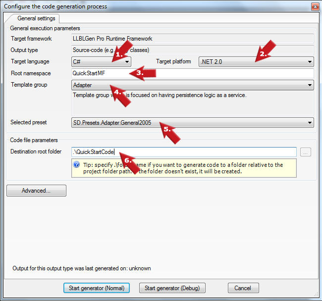

|

-
Start by selecting the Target language you want to use. This is the language the generated code will be in.
-
The next step will be to select which Target platform you are generating code for.
-
Then you specify the Root namespace in the root namespace textbox. This root namespace textbox is filled by default with the root namespace defined in the project properties.
Say, you've defined it as 'QuickStartProject', the namespaces in the code will look like 'QuickStartProject.CollectionClasses' or 'QuickStartProject.Entities'.
-
Now select the template group you want to use for your generated code. A template group is the grouping construct of a set of templates.
It depends on the project's target framework which template groups are available.
-
Proceed by selecting your preset of choice. A preset is a definition of a run queue, with tasks and task groups in the right order, and the right values for the task parameters.
-
Define the directory you want to store the generated code in in the Destination root folder textbox.
|